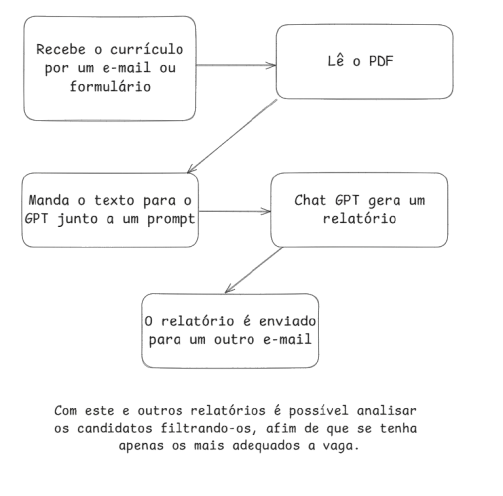

Sobre o Projeto
A VetorRH surgiu com o objetivo de otimizar o processo de recrutamento e seleção, conectando currículos às exigências específicas de cada vaga com o auxílio da tecnologia.
Como Funciona
- Recebimento de currículos
- Análise automatizada dos documentos
- Comparação com os requisitos da vaga
- Geração de ranking dos candidatos compatíveis
Vantagens
- Rapidez no processo seletivo
- Redução de erros humanos
- Análises padronizadas
- Assertividade nas contratações
O que será feito
Veja abaixo o processo de como nosso sistema vai otimizar seu processo de recrutamento e seleção.
Tecnologias Utilizadas
HTML, CSS, JavaScript, C# (ASP.NET Web API para análise de currículos)